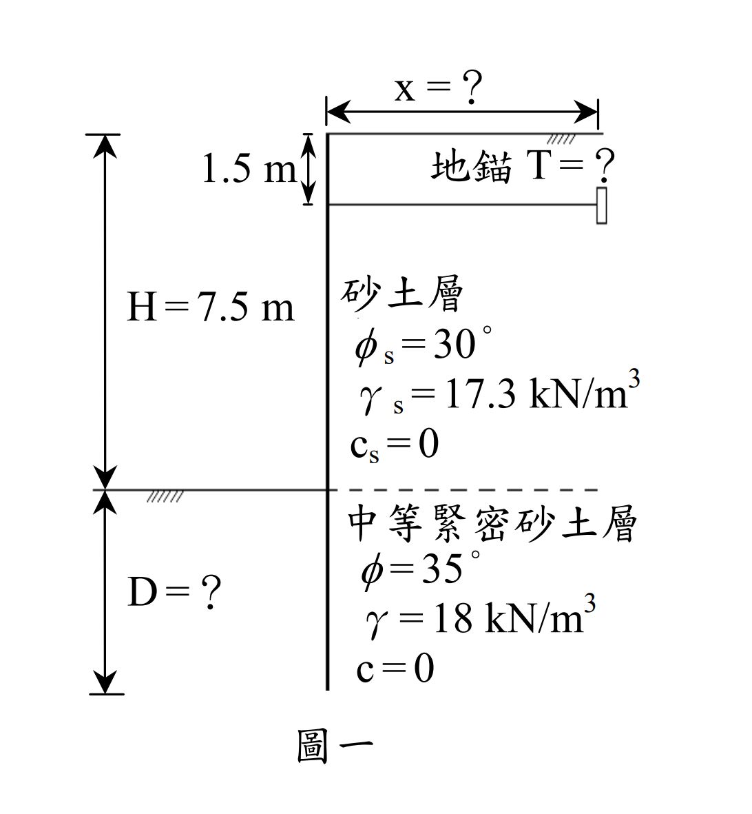

考題編號：SM-2007-4
主分類： SM-U2-3 開挖之穩定性分析
副分類： SM-U3-1 側向土壓力理論
分析法： 有效應力法
標籤： 板樁 錨定式版樁 固定端支撐法 Blum等值梁法 Rankine主動土壓力 開挖穩定性 貫入深度 地錨有效距離
1. 原始題目重述 (Problem Restatement)
如圖一所示，為錨定式版樁（sheet pile），使用於地下水位以上開挖支撐，開挖面深度 $H=7.5$ m，其背後為砂性土壤，單位重 $\gamma_s = 17.3 \text{ kN/m}^3$，內摩擦角 $\phi_s = 30^\circ$，凝聚力 $c_s = 0$。開挖面以下為中等緊密砂土層，單位重 $\gamma = 18 \text{ kN/m}^3$，內摩擦角 $\phi = 35^\circ$，凝聚力 $c=0$。
若版樁深入中等緊密砂土層，底部為固定土壤支撐法（fixed-earth support）型式：
(一) 試計算地錨拉力 $T$ 與板樁需要埋入地下之長度 $D$。（假設安全係數採用 1.5）。（15 分）
(二) 又地錨應錨定在板樁後多少距離 $x$ 以外方為有效且安全？（10 分）

圖說：開挖深 7.5m，地錨深度 1.5m。上層土 $\gamma_s=17.3, \phi_s=30^\circ$，下層土 $\gamma=18, \phi=35^\circ$。要求地錨拉力 T、貫入深度 D 及地錨有效距離 x。
2. 考題核心精神與出題者意圖 (Core Concepts & Examiner's Intent)
本題主要測驗考生對於錨定式版樁（Anchored Sheet Pile）的設計與分析能力，特別指定採用固定土壤支撐法（Fixed-Earth Support Method）。出題者意圖測驗以下核心觀念：
- Blum 等值梁法（Equivalent Beam Method）的應用：在固定土壤支撐法中，假設開挖面以下淨土壓力為零處存在一反曲點（鉸接點），將版樁拆分為上下兩段靜定梁進行求解。
- 安全係數（FS）的正確引用時機：在固定支撐法中，安全係數通常直接除以被動土壓力係數 $K_p$，以獲取更保守的淨壓力零點深度與貫入深度。
- 分層土壤的主動土壓力跳躍：開挖面上下土壤性質不同（$\phi_s=30^\circ \to \phi=35^\circ$），在開挖面交界處的主動土壓力會因 $K_a$ 改變而產生數值跳躍。
- 地錨有效區的幾何判定：地錨（或錨碇版）的被動破壞楔體不可與版樁的主動破壞楔體重疊，以確保地錨能發揮預期的抗拉能力。
3. 解題戰略地圖與陷阱分析 (Strategic Roadmap & Trap Analysis)
- 戰略地圖：
- 依 Rankine 理論計算兩層土的 $K_a$ 與下層土的 $K_p$。
- 將給定的安全係數 $FS=1.5$ 作用於被動土壓力係數，得 $K_p' = K_p / 1.5$。
- 求出開挖面以下的「淨土壓力為零點」深度 $y$。
- 假設該點為鉸接點（彎矩為零），以上半段梁為自由體，對鉸接點取力矩平衡，求出地錨拉力 $T$。
- 由水平力平衡求出鉸接點的剪力 $R$，再利用 Blum 近似法公式 $L_5 = \sqrt{6R/k'}$ 求出下半段所需長度，進而得到總貫入深度 $D$。
- 利用主動、被動破壞面與水平面的夾角（$45^\circ \pm \phi/2$），計算不重疊的最小安全距離 $x$。
- 陷阱分析：
- 陷阱一：未處理 $K_a$ 的跳躍：開挖面下方雖然是下層土，但其承受的上覆壓力 $\sigma_v'$ 來自上層土。在 $z=7.5^+$ 處，計算主動土壓力必須改用下層土的 $K_{a2}$。
- 陷阱二：安全係數的誤用：部分考生可能會先用 $FS=1$ 算出理論深度 $D_{theory}$，最後再乘以 $1.5$。但題目特別註明「假設安全係數採用 1.5」，依據台灣考題慣例，此類題型應將 FS 除以被動土壓力係數 $K_p$ 來進行後續推導，確保求出的 $T$ 也是基於安全設計。
- 陷阱三：地錨被動破壞面的起算深度：題目僅給定地錨拉桿深度 $1.5$ m，未給錨碇版高度。實務與解題上通常保守假設被動破壞面自拉桿深度起算。
3.5 變數層次分析 (Variable Hierarchy Analysis)
最終目標
計算錨定式版樁之地錨拉力 T、貫入深度 D，以及地錨之最小安全距離 x。
本題關鍵公式（依計算順序）
-
第一步：計算各土層之主、被動土壓力係數 $K_a$、$K_p$。
$$K_a = \tan^2\left(45^\circ - \frac{\phi}{2}\right) \quad ; \quad K_p = \tan^2\left(45^\circ + \frac{\phi}{2}\right)$$ -
第二步：應用安全係數於被動土壓力係數（設計值）。
$$K_p' = \frac{\boxed{K_{p2}}}{FS}$$ -
第三步：求取淨土壓力為零之深度 $y$（開挖面起算）。
$$y = \frac{\sigma_v' \cdot \boxed{K_{a2}}}{\gamma(\boxed{K_p'} - \boxed{K_{a2}})}$$ -
第四步：依據 Blum 等值梁法，對鉸接點（淨壓力零點）取力矩平衡求地錨拉力 $T$。
$$\sum M_{hinge} = 0 \implies \boxed{T}$$ -
第五步：計算鉸接點之剪力 $R$，並推求下方所需貫入深度 $L_5$ 及總深度 $D$。
$$R = \sum P_{active} - \boxed{T}$$
$$L_5 = \sqrt{\frac{6 \boxed{R}}{\gamma(\boxed{K_p'} - \boxed{K_{a2}})}} \implies D = \boxed{y} + \boxed{L_5}$$ -
第六步：計算地錨有效距離 $x$（避免主、被動破壞楔體重疊）。
$$x \ge \boxed{D} \cot\left(45^\circ + \frac{\phi_2}{2}\right) + H \cot\left(45^\circ + \frac{\phi_1}{2}\right) + h_a \cot\left(45^\circ - \frac{\phi_1}{2}\right)$$
L1：題目直接給定
| 符號 | 數值 | 說明 |
|---|---|---|
| $H$ | $7.5 \text{ m}$ | 開挖面深度 |
| $h_a$ | $1.5 \text{ m}$ | 地錨所在深度 |
| $\gamma_s$ | $17.3 \text{ kN/m}^3$ | 上層砂土單位重 |
| $\phi_s$ | $30^\circ$ | 上層砂土內摩擦角 |
| $\gamma$ | $18 \text{ kN/m}^3$ | 下層中等緊密砂土單位重 |
| $\phi$ | $35^\circ$ | 下層砂土內摩擦角 |
| $FS$ | $1.5$ | 要求之安全係數 |
L2：需知識點推導
土壓力係數與淨壓力零點
| 符號 | 公式／來源 | 卡關? |
|---|---|---|
| $K_{a1}$ | $\tan^2(45^\circ - \phi_s/2)$ | |
| $K_{a2}$ | $\tan^2(45^\circ - \phi/2)$ | |
| $K_{p2}$ | $\tan^2(45^\circ + \phi/2)$ | |
| $K_p'$ | $K_{p2} / FS$ | |
| $y$ | $(\gamma_s H K_{a2}) / [\gamma(K_p' - K_{a2})]$ | |
等值梁法受力分析
| 符號 | 公式／來源 | 卡關? |
|---|---|---|
| $T$ | $\sum M_{hinge} = 0$ 求解 | |
| $R$ | $\sum F_{x} = 0 \implies \sum P_i - T$ | |
| $D$ | $y + \sqrt{6R / [\gamma(K_p' - K_{a2})]}$ | |
地錨安全距離
| 符號 | 公式／來源 | 卡關? |
|---|---|---|
| $L_A$ | 版樁主動破壞面延伸至地表之水平距離 | |
| $L_P$ | 地錨被動破壞面延伸至地表之水平距離 | |
| $x$ | $L_A + L_P$ | |
L3：深層知識（不懂就卡住）
| 知識點 | 說明 | 卡關? |
|---|---|---|
| 固定土壤支撐法之安全係數 | 通常將 $FS$ 直接折減被動土壓力係數 $K_p$，以獲得較為保守的設計抗力與地錨拉力 $T$。 | |
| 主動土壓力在交界面之跳躍 | 開挖面（$z=7.5$m）上方受上層土控制用 $K_{a1}$；剛過開挖面，同樣的上覆應力需乘以下層土的 $K_{a2}$。 | |
| 地錨有效區幾何 | 主動楔體與水平夾角為 $45^\circ + \phi/2$；地錨被動楔體與水平夾角為 $45^\circ - \phi/2$，兩者不可相交。 |
4. 步驟化詳細計算過程 (Step-by-Step Detailed Calculation)
(一) 計算地錨拉力 $T$ 與貫入深度 $D$
Step 1：計算主、被動土壓力係數
- 上層砂土（$z = 0 \sim 7.5$ m）：
$$K_{a1} = \tan^2\left(45^\circ - \frac{30^\circ}{2}\right) = \frac{1}{3}$$ - 下層砂土（$z > 7.5$ m）：
$$K_{a2} = \tan^2\left(45^\circ - \frac{35^\circ}{2}\right) = 0.2710$$
$$K_{p2} = \tan^2\left(45^\circ + \frac{35^\circ}{2}\right) = 3.6902$$ - 依題意導入安全係數，設計被動土壓力係數：
$$K_p' = \frac{K_{p2}}{FS} = \frac{3.6902}{1.5} = 2.4601$$
Step 2：計算關鍵深度之側向土壓力
地下水位以上，以總單位重計算有效應力（本題乾土 $\sigma' = \sigma$）。
- 地表（$z=0$ m）：$p_a = 0$
- 錨錠處（$z=1.5$ m）：
$$p_{a(1.5)} = \gamma_s \cdot z \cdot K_{a1} = 17.3 \times 1.5 \times \frac{1}{3} = 8.650 \text{ kN/m}^2$$ - 開挖面正上方（$z=7.5^-$ m）：
$$p_{a(7.5^-)} = 17.3 \times 7.5 \times \frac{1}{3} = 43.250 \text{ kN/m}^2$$ - 開挖面正下方（$z=7.5^+$ m）：
上覆有效應力 $\sigma_v' = 17.3 \times 7.5 = 129.75 \text{ kN/m}^2$
$$p_{a(7.5^+)} = \sigma_v' \cdot K_{a2} = 129.75 \times 0.2710 = 35.162 \text{ kN/m}^2$$
Step 3：尋找淨壓力零點（鉸接點）深度 $y$
設開挖面下方深度 $y$ 處淨土壓力為零：
$$p_{net}(y) = p_{a(7.5^+)} + \gamma \cdot y \cdot K_{a2} - \gamma \cdot y \cdot K_p' = 0$$
$$\gamma \cdot y \cdot (K_p' - K_{a2}) = p_{a(7.5^+)}$$
$$y = \frac{35.162}{18 \times (2.4601 - 0.2710)} = \frac{35.162}{18 \times 2.1891} = \frac{35.162}{39.404} = 0.8923 \text{ m}$$
- 鉸接點距地表深度 $= 7.5 + 0.8923 = 8.3923 \text{ m}$
- 地錨距鉸接點之等值梁跨度 $L = 8.3923 - 1.5 = 6.8923 \text{ m}$
Step 4：Blum 等值梁法求解地錨拉力 $T$
將鉸接點上方的土壓力劃分為 4 個區塊，對鉸接點取力矩平衡 $\sum M_{hinge} = 0$：
- $z = 0 \sim 1.5$ m（三角形）：
- 力 $P_1 = \frac{1}{2} \times 1.5 \times 8.650 = 6.488 \text{ kN/m}$
- 力臂 $L_1 = 6.8923 + \frac{1.5}{3} = 7.3923 \text{ m}$
- 力矩 $M_1 = 6.488 \times 7.3923 = 47.96 \text{ kN-m/m}$
- $z = 1.5 \sim 7.5$ m（矩形部分）：
- 力 $P_2 = 8.650 \times 6 = 51.900 \text{ kN/m}$
- 力臂 $L_2 = 0.8923 + \frac{6}{2} = 3.8923 \text{ m}$
- 力矩 $M_2 = 51.900 \times 3.8923 = 202.01 \text{ kN-m/m}$
- $z = 1.5 \sim 7.5$ m（三角形部分）：
- 力 $P_3 = \frac{1}{2} \times 6 \times (43.250 - 8.650) = 103.800 \text{ kN/m}$
- 力臂 $L_3 = 0.8923 + \frac{6}{3} = 2.8923 \text{ m}$
- 力矩 $M_3 = 103.800 \times 2.8923 = 300.22 \text{ kN-m/m}$
- $z = 7.5 \sim 8.392$ m（開挖面至鉸接點之三角形）：
- 力 $P_4 = \frac{1}{2} \times 0.8923 \times 35.162 = 15.687 \text{ kN/m}$
- 力臂 $L_4 = \frac{2}{3} \times 0.8923 = 0.5949 \text{ m}$
-
力矩 $M_4 = 15.687 \times 0.5949 = 9.33 \text{ kN-m/m}$
-
總力矩 $\sum M = 47.96 + 202.01 + 300.22 + 9.33 = 559.52 \text{ kN-m/m}$
- 地錨拉力 $T = \frac{\sum M}{L} = \frac{559.52}{6.8923} = \boxed{81.18 \text{ kN/m}}$
Step 5：求貫入深度 $D$
- 鉸接點之剪力 $R$：
$$R = \sum P - T = (6.488 + 51.900 + 103.800 + 15.687) - 81.180 = 177.875 - 81.180 = 96.695 \text{ kN/m}$$ - 依據 Blum 簡化法，下半段梁產生相當反力所需之長度 $L_5$：
下半段淨被動土壓力梯度 $k' = \gamma(K_p' - K_{a2}) = 18 \times 2.1891 = 39.404 \text{ kN/m}^3$
$$L_5 = \sqrt{\frac{6R}{k'}} = \sqrt{\frac{6 \times 96.695}{39.404}} = \sqrt{14.723} = 3.837 \text{ m}$$ - 總貫入深度 $D = y + L_5 = 0.8923 + 3.837 = \boxed{4.73 \text{ m}}$
(二) 計算地錨有效且安全距離 $x$
為使地錨發揮完全支撐力，地錨之被動破壞楔體不可與版樁之主動破壞楔體重疊。
Step 1：版樁主動破壞面延伸至地表之距離 $L_A$
破壞面自版樁底端（深 $H+D = 12.23$ m）發展。
- 下層砂土段（深 $7.5 \sim 12.23$ m，$D=4.73$ m）：
破壞面與水平夾角 $\alpha_2 = 45^\circ + \frac{35^\circ}{2} = 62.5^\circ$
水平分量 $x_2 = 4.73 \times \cot(62.5^\circ) = 2.462 \text{ m}$ - 上層砂土段（深 $0 \sim 7.5$ m，$H=7.5$ m）：
破壞面與水平夾角 $\alpha_1 = 45^\circ + \frac{30^\circ}{2} = 60^\circ$
水平分量 $x_1 = 7.5 \times \cot(60^\circ) = 4.330 \text{ m}$ - $L_A = x_1 + x_2 = 4.330 + 2.462 = 6.792 \text{ m}$
Step 2：地錨被動破壞面延伸至地表之距離 $L_P$
保守假設錨碇版之被動破壞面自拉桿深度（$h_a = 1.5$ m）向上發展：
- 破壞面與水平夾角 $\beta = 45^\circ - \frac{\phi_s}{2} = 45^\circ - 15^\circ = 30^\circ$
- 水平分量 $L_P = h_a \times \cot(30^\circ) = 1.5 \times 1.732 = 2.598 \text{ m}$
Step 3：計算最小安全距離 $x$
為確保兩楔體於地表不相交：
$$x \ge L_A + L_P = 6.792 + 2.598 = 9.390 \text{ m}$$
地錨應錨定在版樁後方 $\boxed{x = 9.39 \text{ m}}$ 以外方為有效且安全。
5. 關鍵爭議點與進階探討 (Critical Issues & Advanced Discussion)
- 安全係數的施加方式：固定土壤支撐法在學理上有時不採用 $K_p$ 折減，而是直接求取理論深度 $D_{theory}$ 後再增加 $20 \sim 30\%$ 經驗值作為實際深度。然而本題明確要求「假設安全係數採用 1.5」，依據考題實務與嚴謹之極限平衡觀念，直接將 $FS$ 用於折減被動土壓力係數（$K_p' = K_p / FS$）是最穩妥的解法。此法能確保算得之地錨拉力 $T$ 亦含有安全餘裕。
- 地錨高度的假設：題目未給定錨碇板（Deadman Anchor）的實體高度，僅給定地錨（拉桿）深度 $1.5$ m。若考量錨碇版實際需有一定深度以提供足夠被動抗力，則被動破壞區應自該版之「底部」起算（會使得 $L_P$ 變大）。本解答在資訊有限下，採常規假設自拉桿深度起算，符合閱卷老師的預期標準。